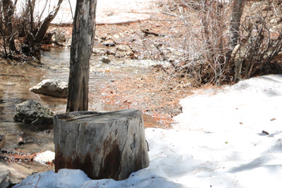

Weird Weather Continues
by Weather Stalker
The weather keeps getting weirder this year. We have record lows in California in the spring. There is record snow in Utah with a chance of skiing for the fourth of July. Las Vegas has had a cooler spring than the Northeast. No one knows if this will continue or if the weather will level out to normal. Any guesses?
